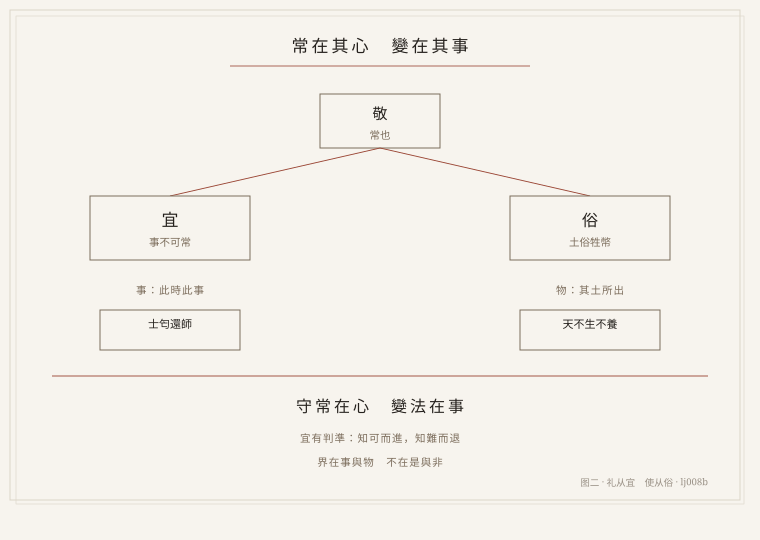

曲礼上 · 一·九 · 第 8 课
上一课讲自己怎么坐、怎么立；这一课讲人到了别处，礼怎么变。
说什么事：行礼要顺从当下的宜；奉命出使，要用所在之地的土产行礼。
落在哪一层：义——礼的「常」与「变」。
为何编在此位：坐立是礼之常，从宜从俗是礼之变。常立住了，才谈得上变；变通了，常才不死。故一·八言常，一·九言变。
【经】禮從宜，使從俗。
从 顺从，不是屈从。郑注两句之下，一字不差都是「事不可常也」——「从」的对象是事，不是人。
宜 郑注：「事不可常也。」孔疏：「知可而进，知难而退，前事不可准定，贵从当时之宜也。」宜是「此时此事合当如此」，不是「于我方便」。
使 孔疏：「谓人臣奉命出使征伐之礼。」出使、出征都在内，不止聘问。
俗 孔疏：「谓臣为君出聘之法，皆出土俗牲币以为享礼，土俗若无，不可境外求物。」俗是土产、土宜，不是风气。
从俗之限 郑注：「亦事不可常也。牲币之属，则当从俗所出。」——从的是物，不是是非。
礼要随当下的情形而定；奉命出使，就用所在之地的土产行礼。
礼有常，而常须能变；变有界，界在「事」与「物」，不在「是」与「非」。
第一层 同一句注，下两遍 郑注给「从宜」下「事不可常也」，给「从俗」又下「亦事不可常也」。同一句话注两处，是在说：这不是两件事，是一条理的两头。礼的条文是常，所对的事是变；条文不能不变，变又不能无据，据就在「事」上。
第二层 士匄还师 孔疏举襄十九年：晋士匄帅师侵齐，至穀，闻齐侯卒，乃还。《春秋》善之，「大其不伐丧也」。疏又补一句要紧的：「大夫以君命出使，进退在大夫。」——君命给的是方向，不是每一步；在境外的进退，托给出使的人。这不是放权，是托付：礼承认有些判断只能到现场才做得了，在朝堂上做不了。
第三层 从俗从的是物 「出土俗牲币以为享礼，土俗若无，不可境外求物。」这一条极实：到一国，用那一国出产的东西行礼；那国若没有，不可越境去求。郑引《礼器》为证：「天不生，地不养，君子不以为礼，鬼神不飨。」——礼不能拿「我费了多大力气弄来」当诚意。物非其土，礼不成；这不是俭，是认地。
第四层 常与变 吕氏一句最简：「敬者礼之常，礼时为大，时者礼之变。体常尽变，则达之天下。」——敬是常，时是变；守住敬，才敢变节目。反过来，节目不敢变而只守条文，是以形守常，常已死。应氏补一句：「五方皆有性，千里不同风，所以入国而必问俗。」——入国问俗，是变的前一步：先看，再定。
与今日何干 今日两病：一病是「我们这儿一直这样」，把条文当礼；一病是「入乡随俗」，把俗当是。此句给两条界：宜者，此时此事之当；俗者，其土所出之物。过了这两条界，就不叫「从」，叫「随」。
| 左 | 右 |
|---|---|
| 礼从宜：事不可常，随事而定 | 使从俗：去国行礼，用其土物 |
| 宜者，此时此事之当 | 俗者，其土所出之物 |
| 敬是常，节目是变 | 守常在心，变法在事 |
| 入境先问禁、问俗 | 天不生、地不养，不以为礼 |
画两只行囊并置：一只装着粟与帛，囊口系紧；一只空着，囊口敞开。旁立一杆节杖，杖头旄在风里偏向一侧。远处一道关隘的影，只画轮廓。不画人。赭色只在节旄与两囊的系绳。
